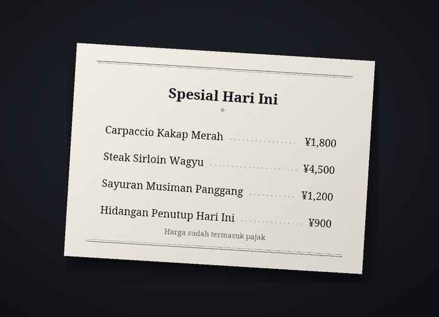

Bot penerjemah chat Discord
Ngobrol di Discord pakai bahasa ibumu sendiri
Cozirom adalah bot Discord yang menerjemahkan chat ke bahasa lawan bicara. Setelah kamu menyalakannya, pesanmu diposting dalam bentuk terjemahan dengan nama dan foto profilmu sendiri, dan teks di gambar juga ikut diterjemahkan.
Terjemahan dibuat oleh AI (Claude dari Anthropic). Bisa saja salah, jadi untuk hal penting, cek juga teks aslinya.
Yang bisa dilakukan
Satu bot menerjemahkan teks, gambar, dan suara
Batas paket dihitung dalam terjemahan. Satu pesan yang diterjemahkan ke satu bahasa dihitung 1 terjemahan.
6 fitur
Dalam terjemahan
Terjemahan otomatis
Jalankan
/terjemah nyalakansekali, dan pesanmu di server itu akan diposting dalam bahasa lawan bicara dengan nama dan foto profilmu sendiri. Teks aslinya tetap ada di bawah terjemahan dalam tulisan kecil, dan tombol menampilkan teks asli lengkapnya.
menampilkan teks asli lengkapnya.Terjemahan1 per pesan
Teks di gambar
Menu, layar game, meme: kalau gambarnya ada teks, teksnya dibaca dan diterjemahkan. Buka lewat ikon
 di bawah gambar dari orang yang menyalakan terjemahan otomatis, atau lewat terjemahan klik kanan. Hanya orang yang memintanya yang melihat hasilnya, dan gambar tanpa teks tidak dihitung.
di bawah gambar dari orang yang menyalakan terjemahan otomatis, atau lewat terjemahan klik kanan. Hanya orang yang memintanya yang melihat hasilnya, dan gambar tanpa teks tidak dihitung.TerjemahanBiasanya sekitar 9 per gambar
Terjemahan di gambar
Lewat ikon
 , dapatkan salinan gambar yang teks aslinya sudah dihapus dan terjemahannya digambar di tempat yang sama. Font awalnya “Sesuai aslinya”, yang mendekati huruf aslinya, dan kamu bisa berganti di antara maksimal 10 set font seperti “Serif”, “Tulisan tangan”, dan “Komik” tanpa dihitung. Fitur ini paling cocok untuk teks horizontal seperti tangkapan layar, meme, layar game, dan menu, dan hanya orang yang menekan yang melihat hasilnya.
, dapatkan salinan gambar yang teks aslinya sudah dihapus dan terjemahannya digambar di tempat yang sama. Font awalnya “Sesuai aslinya”, yang mendekati huruf aslinya, dan kamu bisa berganti di antara maksimal 10 set font seperti “Serif”, “Tulisan tangan”, dan “Komik” tanpa dihitung. Fitur ini paling cocok untuk teks horizontal seperti tangkapan layar, meme, layar game, dan menu, dan hanya orang yang menekan yang melihat hasilnya.TerjemahanBiasanya sekitar 19 per gambar


Contoh: foto asli (kartu menu berbahasa Jepang), dan foto yang sama setelah teksnya dihapus dan terjemahan bahasa Indonesia digambar di tempatnya dengan font “Serif”. Pesan suara
Klik kanan pesan suara yang dikirim dari aplikasi ponsel untuk melihat transkripsi ucapannya beserta terjemahannya. Pesan hingga 3 menit ditranskripsikan, dan pesan tanpa ucapan tidak dihitung.
Terjemahan1 per detik, ditambah terjemahanPesan 10 detik biasanya 11
4 nada
Bahasa gaul, santai, ramah, atau formal, dipilih untuk tiap server. Santai dengan teman, formal di tempat baru. Di paket Guest (gratis), kamu bisa memakai keempat nada selama 14 hari pertama, lalu nada ramah.
TerjemahanBerbayar: keempatnya. Free: 14 hari pertama
31 bahasa
Ada 31 bahasa yang bisa diterjemahkan. Tampilan dan nama perintah bot muncul dalam 30 bahasa Discord, jadi lawan bicaramu juga bisa mengaturnya dalam bahasanya sendiri.
Terjemahan31 diterjemahkan, 30 untuk tampilan

Cara memulai
Tiga langkah, dan terjemahan muncul atas namamu
Tambahkan bot ke server
Admin server menambahkan bot ke server. Minta tautan undangannya di server dukungan.
Nyalakan terjemahan
Siapa pun yang ingin pesannya diterjemahkan menjalankan
/terjemah nyalakandi server itu. Bot menebak bahasamu dan bahasa lawan bicara, lalu membuka panel pengaturan. Kalau tidak tepat, ubah di dropdown.Tulis seperti biasa
Tulis seperti biasa, dan terjemahannya muncul atas namamu. Mulai dengan paket Guest (gratis), lalu ganti paket di halaman paket kalau butuh lebih banyak.
Privasi
Pesan yang akan diterjemahkan dan gambar hanya dikirim ke Anthropic (AS), dan audio pesan suara hanya dikirim ke Google (AS). Bot menyimpan teks asli dari terjemahan yang diposting selama 14 hari dan cache terjemahan selama 30 hari, serta tidak menyimpan gambar, audio, atau teks yang dibaca darinya. Isi chat tidak pernah masuk ke log, dan /terjemah hapus-dataku menghapus datamu kapan saja.